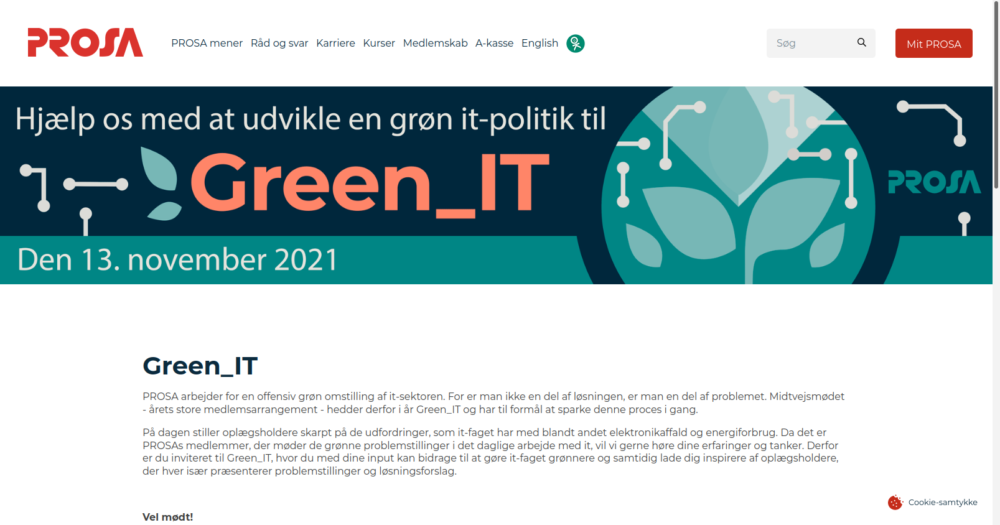
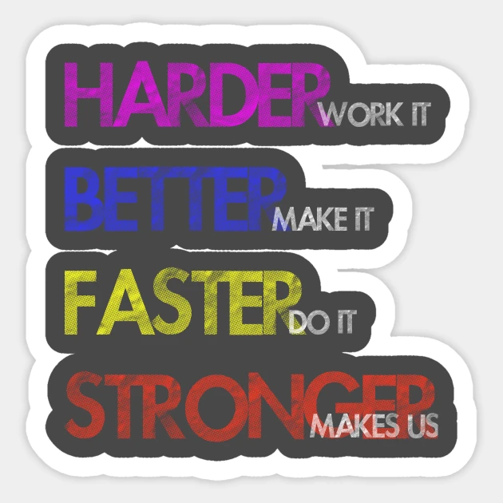
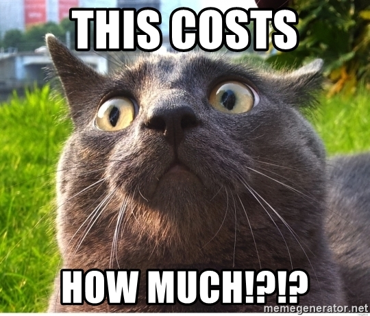
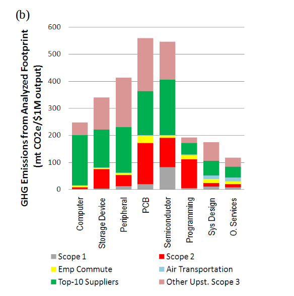
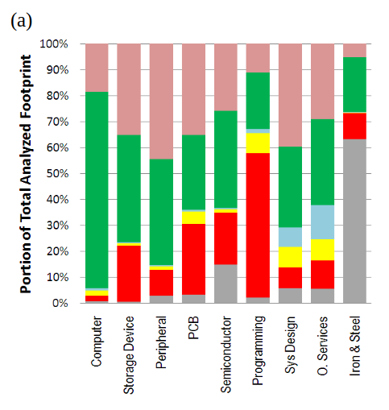
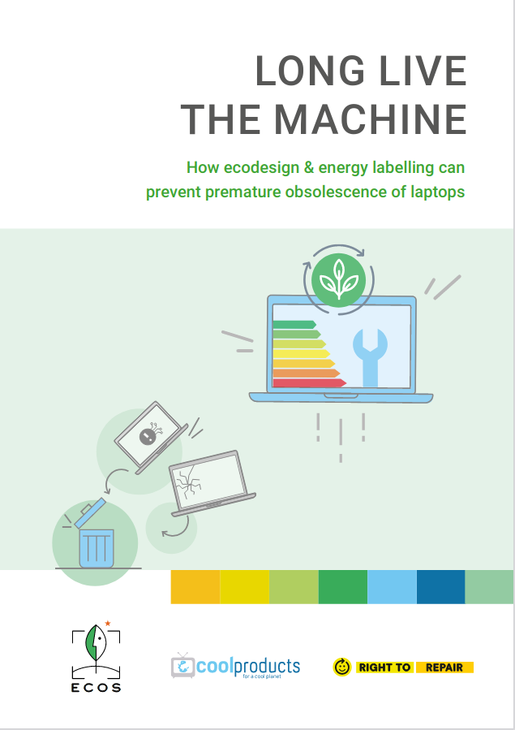
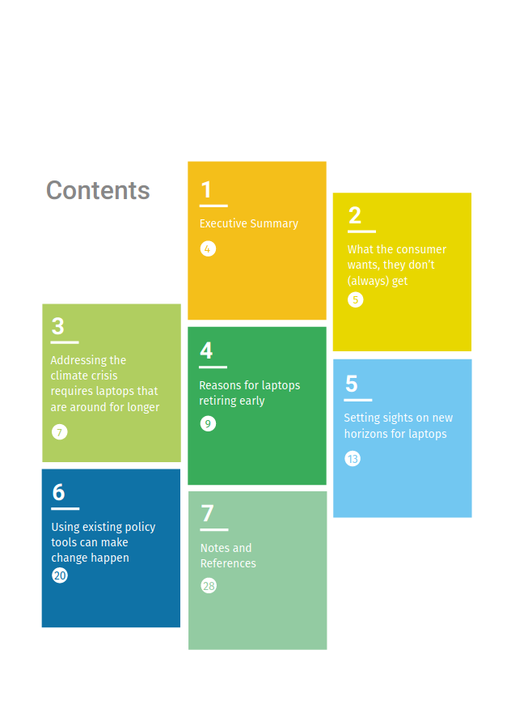
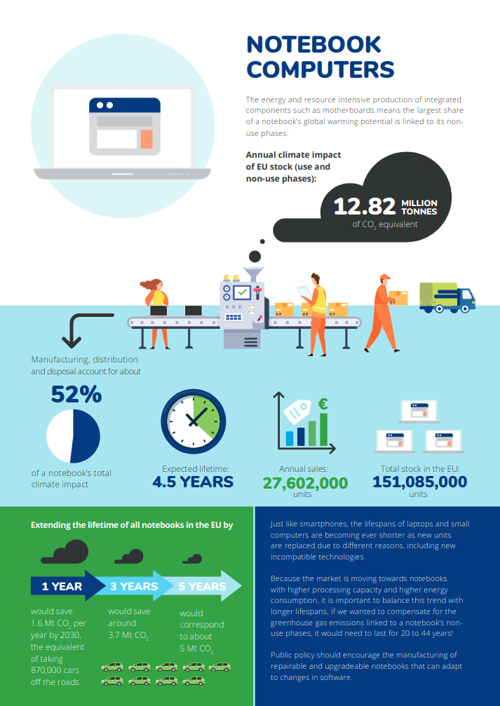

name: big-title count: false class: title-slide, slide-columns, hide-counter .left-column[ # Workshop om it-genbrug og reparation ## »Kom og bliv klogere på klimaproblematikkerne ved hardwareproduktionen og hvad du selv kan gøre for at skabe en ny retning« 1. september 2021, PROSA UNG ] .right-column[ #### Benjamin Balder Bach Slides | [https://github.com/benjaoming/prosa-workshop-20210901/](https://github.com/benjaoming/prosa-workshop-20210901/) ---------|------------------------------------------------------------- Twitter | [@benjaoming](https://twitter.com/benjaoming) Homepage | [https://overtag.dk](https://overtag.dk) Associations | [Fair Allocation of Infotech Resources (FAIR)](https://www.fairdanmark.dk/en/), [data.coop](https://data.coop/), [Django Danmark](https://www.django-denmark.org/), Medlem af PROSA/Offentlig (Udviklings- og Forenklingsstyrelsen, DevOps) ] ??? Fortæl lidt om dig selv Jeg vil rigtig gerne give en introduktion og motivation for at arbejde med genbrug og reparation af it-udstyr. Og især for it-folk. Det er min opfattelse, at der både er brug for politisk vilje og praktisk erfaring og handekraft for at flytte på disse områder. --- class: fancy-headline-slide, fancy-headline-slide1, slide-columns, hide-counter .left-column[ # Program ] .right-column[ <pre> 17:00 Introduktion (10 min) 17:10 Break-out sessions med intro 17:20 Teoretisk Miljøaftryk: Hvorfor genbruge og levetidsforlænge? 17:45 Praktisk genbrug: FAIR Danmark mm. 18:00 Besøg: Jiří fra Paranda 18:15 Besøg: Janet fra The Restart Project 18:30 Afslutning, opfølgning og uformel chat </pre> ] ??? Bemærk at vi ikke har nogen pauser, men vi har hæng-ud bagefter --- class: fancy-headline-slide, fancy-headline-slide2, slide-columns, hide-counter .left-column[ # Introduktion ] .right-column[ # Denne talk er næsten*) for alle \*) Lang vej til, at alle ønsker at genbruge og reparere deres it-udstyr ] ??? Vi skal gøre reparation og genbrug populært. Så det nytter ikke noget, at vi pakker det for meget ind i mystik og anser os selv som nogle særlige nørder. Reparation plejede at være en form for demokratisk ret: Man ejede indsigt og evne til at reparere. Det skal vi have tilbage. Vi plejede også at have møbler, som skulle holde hele livet og kunne gives videre i arv. Men vi kan have forskellige tilgange til genbrug og reparation, så lad os bare prøve at komme lidt ind på det. Someone interested in reusing just a couple of computers Other people doing reuse already Someone working at a company that replaces equipment All too often I meet people who didn't have time to re-purpose equipment, who are saving stuff they don't need, letting good equipment slide into the dumpster. This is especially a problem in the professional sector, where few often very few people are left with the responsibility of a lot of equipment. Details are important, but don't be scared of details. If you like practical work and troubleshooting, then reusing ICT equipment can have a lot of technical, logistical and human factors that are wonderful and rewarding to work with. But we should be taking re-use to a new level and leverage our Open Source ideals such that the processes, logistics and ultimately requirements of certification etc. are not obstacles, but opportunities. --- class: fancy-headline-slide, fancy-headline-slide2, slide-columns, hide-counter .left-column[ # Introduktion ] .right-column[ # Hvad laver PROSA lige nu? * Arbejdsgruppe om Grøn it **i PROSA** * Medlem af Right to Repair Europe * Arrangementer om Grøn It (som dette) * Green_IT (Midtvejsmøde 13. november)  ] --- class: fancy-headline-slide, fancy-headline-slide2, slide-columns, hide-counter .left-column[ # Introduktion ] .right-column[ # Hvorfor? ] ??? ICT Reuse Why? Because it's good for the environment and people to be using our ressources as wisely as posslbe --- class: fancy-headline-slide, fancy-headline-slide2, slide-columns, hide-counter .left-column[ # Introduktion ] .right-column[ # Hvordan? ] ??? ICT Reuse How? You take a computer from somewhere that it isn't used and bring it to somewhere it will be used. --- class: fancy-headline-slide, fancy-headline-slide2, slide-columns, hide-counter .left-column[ # Introduktion ] .right-column[ # Breakout rum (10 minutter) * 3-4 i hvert rum * Introduktion, giv alle 1 minut - Hvorfor er I kommet med? * Kan I sammen give 3 gode eksempler på genbrug reparation fra jeres eget liv? * Hvad synes I er 3 store udfordringer, som vi skal løse? * Feedback her: [https://pad.data.coop/ttI5qMhgR-S030hYgXtTSQ?both](https://pad.data.coop/ttI5qMhgR-S030hYgXtTSQ?both) (vi når ikke at gennemgå det, men vi kan jo kigge på hinandens svar bagefter, hvis der er tid) ] ??? Hvad er breakout rooms? Teams-chat fungerer ikke, men I må meget gerne skrive feedback fra jeres sessions i linket. --- class: left, middle, section-title # Miljøaftryk --- class: left, middle, section-title # <strike>Miljø</strike>aftryk ??? Vi starter "blødt" eller kvalitativt. Der findes nemlig ikke så mange gode kvantitative bud. --- class: fancy-headline-slide, slide-columns, hide-counter .left-column[ # Miljøaftryk ] .right-column[ # Hvordan bliver computere født? * Resourcer fra naturen * Menneskeligt arbejde * (Økonomien) ] ??? It-udstyr bliver ikke skabt ud af det blå Enormt miljøaftryk Menneskelige omkostninger: Dårlige arbejdsmiljøer, dårlige lønninger, arbejdstider, minesektoren Så nøglespm er: Hvordan forlænger vi levetiden og reducerer produktionen? Svaret er kompliceret, men vi skal blive bedre til at genbruge og reparere Først skal vi dog lige dykke lidt ned i at forstå aftrykket.. miljøaftrykket i dette tilfælde. --- class: fancy-headline-slide, slide-columns, hide-counter .left-column[ # Miljøaftryk ] .right-column[  ] ??? Mikroøkonomisk perspektiv er nemmere Oversættelsen til makroøkonomisk perspektiv er svær. Hvad er i vejen for at man makroøkonomisk kan addressere lagene i pyramiden? ...for samfundet - offentlige sektor, virksomheder --- class: fancy-headline-slide, slide-columns, hide-counter .left-column[ # Miljøaftryk ] .right-column[ ## The most amazing achievement of the computer software industry is its continuing cancellation of the steady and staggering gains made by the computer hardware industry. ### Henry Petroski ] ??? But there is also a really complicated macro-economic aspect of reuse and life-span of hardware. Read the quote The challenge posed here is that the essential value of technological gains are actually cancelled out. Let's try to understand a bit more of this. --- class: fancy-headline-slide, slide-columns, hide-counter .left-column[ # Miljøaftryk ] .right-column[ # Induceret efterspørgsel ## Større udbud => Øget forbrug ] ??? In basic economic theory, we see that there is a relation between supply and demand that isn't just about price creation in a market. Consider the good old example of roads. Creating bigger or more roads leads to more traffic, and ultimately we don't get rid of congestion. --- class: fancy-headline-slide, slide-columns, hide-counter .left-column[ # Miljøaftryk ] .right-column[ # Jevon's Paradoks ## Mere effektivt eller tilgængeligt/billigt kul => <br>Større forbrug ] ??? In this old example about coal efficiency and availability, we saw that even though the coals got more efficient due to technological advancement, the usage didn't stall or decrease. It increased. --- class: fancy-headline-slide, slide-columns, hide-counter .left-column[ # Miljøaftryk ] .right-column[ # Wirth's Law ## Software is getting slower more rapidly than hardware is becoming faster. # Gates' Law ## The speed of software halves every 18 months ] --- class: fancy-headline-slide, slide-columns, hide-counter .left-column[ # Miljøaftryk ] .right-column[  ] ??? In this old example about coal efficiency and availability, we saw that even though the coals got more efficient due to technological advancement, the usage didn't stall or decrease. It increased. --- class: fancy-headline-slide, slide-columns, hide-counter .left-column[ # Miljøaftryk ] .right-column2[  ] ??? De økonomiske hjul bliver ved med at dreje rundt, så det er reelt set kun konkurrence-dygtig genbrug eller regulering, der kan standse udviklingen. --- class: fancy-headline-slide, slide-columns, hide-counter .left-column[ # Miljøaftryk ] .right-column[  (Berlingske: »Presset vokser: CO2-udledning fra datacentre overgår flybranchen før coronakrisen. Strømforbruget stiger hvert år med seks procent i datacentrene«) ] ??? Tweetet handler om, at Berlingske har skrevet om, at datacentre øger deres andel af global CO2-udledning forventes at stige 6% hvert år. --- class: fancy-headline-slide, slide-columns, hide-counter .left-column[ # Miljøaftryk ] .right-column[ # Vores fokus: Reparation og genbrug af hardware ## ≠ Energiforbrug ] ??? Vi kigger ikke engang på energi-udledningen i brugsfasen. Vi interesserer os for CO2-udledning og energiforbrug i PRODUKTIONEN. --- class: fancy-headline-slide, slide-columns, hide-counter .left-column[ # Miljøaftryk ] .right-column[  ] ??? Et meget direkte eksempel på, at vi ikke får noget at vide fra producenterne. En sponseret reklame i Computerworld (2016) https://www.computerworld.com/article/3133624/the-carbon-footprint-of-your-tech-equipment.html --- class: fancy-headline-slide, slide-columns, hide-counter .left-column[ # Miljøaftryk ] .right-column[  ] ??? Her er et andet eksempel. Der går 240L appelsinjuice til at lave en laptop. Så ved vi i hvert fald, at udeledningen er større... https://i.dell.com/sites/content/corporate/corp-comm/en/Documents/dell-laptop-carbon-footprint-whitepaper.pdf --- class: fancy-headline-slide, slide-columns, hide-counter .left-column[ # Miljøaftryk ] .right-column[ # Udledninger i produktionsfasen * Minedrift, råmaterialer * Chip-industri, printplader, harddiske, strømforsyninger * "Computer-fabrikken": Ikke særligt meget * Relateret udledning fra industriens aktivitet: Transport, konferencer  ] ??? Vi kigger ikke engang på energi-udledningen i brugsfasen. Vi interesserer os for CO2-udledning og energiforbrug i PRODUKTIONEN. Generelt set er alle enige i, at udledningen fra produktionen er større end fra forbrugsfasen. Dette forhold vil vi gerne nedbringe! Og Kina skal selvfølgelig holde op med at forbrænde kul, men det er ikke vores problem --- class: fancy-headline-slide, slide-columns, hide-counter .left-column[ # Miljøaftryk ] .right-column[ # Studie fra 2009: Det er sindssygt kompliceret ### [Carbon Footprinting Upstream Supply Chain for Electronics Manufacturing and Computer Services](https://www.researchgate.net/publication/232655355_Carbon_footprinting_upstream_supply_chain_for_electronics_manufacturing_and_computer_services)   <div style="font-size: 50%">Fig. 1. Carbon footprint profiles for 8 electronics manufacturing and computer services sectors. The sectors listed in the x-axis are: “Computer” = computer manufacturing; “Storage Device” = computer storage device manufacturing; “Peripheral” = computer terminals and other computer peripheral equipment manufacturing; “PCB” = bare printed circuit board manufacturing; “Semiconductor” = semiconductor and related device manufacturing; “Programming” = custom computer programming services; “Sys Design” = computer systems design services; “O. Services” = other computer related services, including facilities management; “Iron & Steel” = iron and steel mills. In (b), GHG emissions are expressed in metric tons of CO2 equivalence (mt CO2e) per $1 million of output from each sector. Emissions from iron & steel are greater than 3,500 mt CO2e; and therefore is not shown to maintain legibility of (b). </div> ] ??? Produktionskæden/forsyningskæden for elektronik er meget vel den mest komplicerede kæde Outputs: Altså noget ala metriske tons CO2 pr $ million Altså noget i stil med $1.000.000 dollars af computere (200 computere?) = 200 tons CO2 = (100 gange til New York t/r). 1-2-3 tons per computer? Tjah. --- class: fancy-headline-slide, slide-columns, hide-counter .left-column[ # Miljøaftryk ] .right-column[ <div style="height: 100%; width: 100; background: url(university_edinburgh.png); background-repeat: no-repeat; overflow: hidden; margin: 0;"><br></div> ] ??? https://www.ed.ac.uk/files/atoms/files/pc-carbonfootprints-jh-ecci2.pdf --- class: fancy-headline-slide, slide-columns, hide-counter .left-column[ # Miljøaftryk ] .right-column[   ] ??? Rapport fra 2020 (og politik) konkluderer, at 52% af computeres aftryk kommer fra produktionen. --- class: fancy-headline-slide, slide-columns, hide-counter .left-column[ # Miljøaftryk ] .right-column[  ] ??? Samme organisationer (bl.a. Coolproducts og Right to Repair) konkluderer, at hvis vi kan forlænge EUs computeres levetid med 1, svarer det til at pille knap 1 mio. biler ud af trafikken. Ift. vaskemaskiner og støvsugere, er det meget meget meget, cirka 10x mere, virkningsfuldt at forlænge levetiden på smartphones og computere med 1 år. KONKLUSION: Altså det har en ret stor effekt, at vi øger levetiden for it-udstyr, og især for den andel af udstyret, hvor potentialet er størst. --- class: fancy-headline-slide, slide-columns, hide-counter .left-column[ # Miljøaftryk vs. Værdiskabelse ] .right-column[ # Det essentielle fodaftryk Man kan slet ikke producere hardware uden et miljøaftryk! Derfor er det interessante teoretiske spørgsmål: <pre style="margin-top: 40px"> Ressourceforbrug (forurening mv) af produktion og drift -------------------------------- = Essentielt miljøaftryk Værdiskabelse </pre> ] --- class: fancy-headline-slide, slide-columns, hide-counter .left-column[ # Miljøaftryk vs. Værdiskabelse ] .right-column[ # ...bliver et optimerings-problem 1. Optimere levetid + 1. Optimere værdi 1. = Bedre essentielt miljøaftryk ] ??? In the rest of the talk, we will go through firstly the reuse process, and what that means practically and how we setup operations at FAIR Then we'll talk about why it's great to find someone who really needs a computer, and how a civil society platform is great at both sourcing hardware, people, skills and sustain new educational infrastructures for hardware delivery, training and maintenance based on Open Source. --- class: center, middle # Where to look? Answers are not found in a market-based scheme. Yes, we do have commercial reuse, but it won't address the underlying causes in a satisfactory way. We need to reuse with a different set of tools and objectives. --- class: left, middle, section-title # Practical reuse --- class: slide-columns .left-column[ # (Re)use cases ] .right-column[ ## If it's usable, it's reusable ## If it's unusable ### ...it's maybe still reusable! ] --- class: left, middle # Reusing 1 computer ## You find a discarded computer... * Delete the data w/ live USB boot, perhaps DBAN * Try using it yourself for 1-2 days * At least install an end-user operating system * Make it look nice! --- class: left, middle # What to do with 1 computer? ## Give it away * Shelters * Refugee education ## Sell it * To a friend * With your own personal warranty --- class: left, middle # Avoid: Putting it in a drawer. --- class: left, middle # Computer is not working *) * Put it in a drawer :) * Pick spare parts * Charger * RAM * HDD/SSD Tip: Always mark your things. A loose HDD may look "broken", put a note on it, i.e. "tested OK December 2019". *) Not working: No (re)usecase ??? Assuming you cannot fix it --- class: slide-columns .left-column[ # Scaling from 1 to many ] .right-column[ ## Logistics & Reuse Procedures ## Automation / Software ## Physical space ] ??? Other aspects that we won't cover now: * Where to find computers that can be reused? (a communication effort) * How to report? TODO: * How much time do you have for each item? * Writing software to automate the process ID marks, anti-theft, locks on casings (image exists) --- class: left, middle # Reusing a lot of equipment ## FAIR = FAIR Allocation of Infotech Resources ## Statistik, Denmark+Norway siden 2010 * 16.668 computere behandlet, 13.228 genbrugt * 7.247 skærme behandlet, 5.540 genbrugt --- # Video ??? Script: Hello 36th CCC Congress! Here's FAIR's workshop in Copenhagen. It's made for receiving, testing, registering and packing equipment. It's also made for storing essential spare parts. Here we have a stack of laptops. Everything is equipped with a barcode. Never have equipment in the workshop without barcodes. If they were desktops, we would open them and vacuum them first, because desktop computers often contain dust that's unhealthy to inhale.. and they should be vacuumed anyways. These laptops are all very alike, because they're from a company. Typically this means that power adapters for laptops are compatible, BIOS processes are the same. We can process many computers at the same time, but we add one computer at a time. In case a computer has issues, we'll put it aside for later. We go to the BIOS to ensure that netboot is on. Then we boot from the network. We want to scan its barcode immediately before we add another device and might have a hard time remembering which is which. The computer now boots an embedded Linux preloaded with our own scripts to identify hardware and wipe data. It reports back to the attendent's desktop software. That software reports back to our database. Here are some simple features: We get data about hardware, we can choose a method for wiping data, and we can ask the computer to shutdown if everything completes successfully. Let's get a couple more computers plugged in and start... [cat] ... [cat] ... Now we're done, and the laptops are ready. So we are going to put a mark on them so it's properly visible and prepare them. --- class: left, middle # Automation --- class: left, middle # Be cynical ## Reuse as much as possible, not as challenging as possible! ## Always consider the end-user: Don't ship equipment that already seems broken ## Be sure to get information from the former owner ??? * Pick the low-hanging fruit: Spending time on one device is costly, can be postponed * You can have "art for the sake of art" - but don't focus only on "reuse for the sake of reusing" * Don't spend all the time being grateful. Avoid talking purely about donations and charity. People often diminish issues that are really important: Like oh, it occationally reboots [so I can't use it] “To recommend thrift to the poor is both grotesque and insulting. It is like advising a man who is starving to eat less.” ― Oscar Wilde, The Soul of Man Under Socialism Shame on us for not planning technology such that our computers can be useful for a decade. --- class: center, middle # »So, what operating system do you install?« None. --- class: left, middle # Thresholds of reuse Objective criteria can be useful. Subjective assessment can be great, too. * When should a battery be removed? * When is a case too damaged? * When do you add or remove memory? * When is a computer too old? * How long do you store an item missing spare parts before giving up? * SMART data - disk health * How old is too old? * CPU specs ??? You might not have exact answers to these. Track and comment in your database. --- class: left, middle, section-title # Social impact --- class: left, middle, section-title # Zooming out --- class: left, middle, section-title # Questions --- class: fancy-headline-slide, fancy-headline-slide1, slide-columns, hide-counter .left-column[ # Horisont ] .right-column[ * September 2: [Webinar, The Restart Project](https://ti.to/the-restart-project/what-companies-hide-the-high-carbon-impact-of-making-electronics) * October 16: [Repair Day 2021](https://openrepair.org/international-repair-day/) * November 13: [Green_IT (PROSA Midtvejsmøde, annual PROSA conference)](https://www.prosa.dk/green-it/forside/) ] ??? Bemærk at vi ikke har nogen pauser, men vi har hæng-ud bagefter